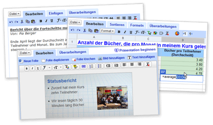

Blog
Ein Handy zum Streicheln...
Was ist los wenn ein Saal voller IT-Journalisten ununterbrochen klatscht und in wahre Begeisterungsstürme ausbricht? Sie müssen jedenfalls bei einem geschichtsträchtigen Anlass sein! Richtig: bei der Vorstellung des neuen Apple-Handys, kurz "iPhone".
Sicher hat das Gerät einige schöne Neuerungen und das Design ist auch nicht schlecht. Die Präsentation von Apple-Chef Steve Jobs erinnerte jedoch mehr an die Rede eines Gurus vor seinen Anhängern.
Allzu zynisch möchte ich mich jedoch an dieser Stelle nicht äussern. Die Option mir selber mal ein iPhone anzuschaffen, möchte ich mir ja nicht völlig verbauen...
Ein Handy-Mast auf dem Mount Everest
Auf dem höchsten Berg der Welt soll bald jeder mit seinem Mobiltelfon erreichbar sein. Zwei chinesische Unternehmen wollen in Zusammenarbeit mit dem Militär das höchste Funkloch der Erde schliessen.
Der Handymast auf 6'500 m.ü.M. soll pünktlich zu den Olympischen Spielen 2008 stehen...
Gemeinsam gegen Spams
Vier der grössten Schweizer Internetprovider spannen im Kampf gegen die Spam- Flut zusammen. Unter dem Namen S.I.A.S (Swiss ISPs Against Spam) treten Bluewin, Cablecom, Green.ch und Sunrise gemeinsam an.
Bereits realisiert ist unter http://www.stopspam.ch eine Plattform im Internet.
Google Docs
Google entwickelt sich von der Suchmaschine immer mehr zum Alleskönner im Netz. Neustes Projekt ist "Google Docs".
Mit diesem online-Tool soll das Erstellen, das (gemeinsame) Bearbeiten und das Verwalten von Dokumenten revolutioniert werden. Und tatsächlich, die Beta- Version macht einen sehr guten Eindruck. Die Darstellung ist sehr übersichtlich und die Bedienung kinderleicht.

Google Mars
Nach Erde und Mond lässt sich nun auch der Mars elektronisch erkunden. Google machts in Zusammenarbeit mit der Arizona State Universität möglich. Wer also bis jetzt in Google Earth (http://earth.google.com) in den Garten des Nachbars schaute, kann jetzt bei Google Mars nach den berühmten grünen Männchen suchen...